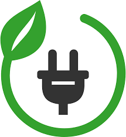

The Vision of Future
On December 2022 government declared that Bangladesh would become a developed and prosperous country by 2041. Smart Bangladesh is a comprehensive and forward-thinking initiative aimed at leveraging digital transformation to bring about positive changes in various aspects of the country's development.
Dogital Transformation
Digital transformation is the process
of using digital
technologies to transform existing traditional and non-digital business processes and services,

Greeen Energy
Energy that comes from natural resources that are replenished on a human timescale. Renewable energy sources include wind and solar power. Using renewable energy can
Modern Infrastructure
Buildin state-of-the-art infrastructure to support
economic growth and global competitiveness.
"After his graduation, Yunus joined the Bureau of Economics as a research assistant to the economics researches of Nurul Islam and Rehman Sobhan.[18] Later, he was appointed lecturer in economics in Chittagong College in 1961.[18] During that time, he also set up a profitable packaging factory on the side.[17] In 1965, he received a Fulbright scholarship to study in the United States. He obtained his PhD in economics from the Vanderbilt University Graduate Program in Economic Development (GPED) in 1971.[21][22] From 1969 to 1972,
DR.Muhammad Yunus
Chief Adviser of the People`s Reapublic of BangladeshRecent News
He US government has invited BNP Acting Chairman Tarique Rahman, its Secretary General Mirza Fakhrul Islam Alamgir and Standing Committee member Amir Khasru Mahmud Chowdhury to attend the National Prayer Breakfast led by the US Congress"

Bangladesh Launches New Satellite
 Date: 11/1/2025 Time:10.30 PM
Date: 11/1/2025 Time:10.30 PM
Bangladesh's first satellite, the Bangabandhu Satellite-1, launched on May 12, 2018 from the Kennedy Space Center in the United States. The satellite was named after Bangladesh's first president, Bangabandhu Sheikh Mujibur Rahman. It was the first satellite to be launched by SpaceX's Falcon 9 Block 5 rocke
How to make website
Date: 11/1/2025 Time:10.30 PM
No matter what type of site you want to make, your website should represent you or your business in the best light possible. This is often easier said than done; it’s not uncommon to get burnt out when building a website from scratch or using a website builder.
Donate Today
Donate A Day is a program from City Hospice that allows individuals to select a day that is meaningful to them to donate to the organization. The day can be a birthday, anniversary, or in memory of a loved one.
100 Taka
200 Taka
500 Taka
1000 Taka
Subscribe Newsletter
Newsletters cover a variety of topics, from daily news to lifestyle content, markets info to medical news. Subscribe to get the latest information